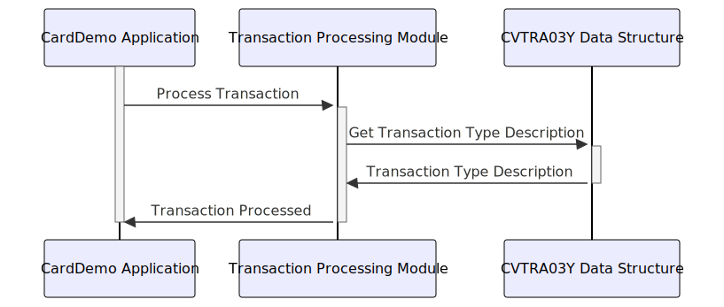

Gerado em: 1º de outubro de 2024
Título do Documento: Especificação da Estrutura de Dados do Tipo de Transação CardDemo
Descrição Resumida:
Este documento descreve a estrutura e o propósito da estrutura de dados TRAN-TYPE-RECORD dentro do aplicativo CardDemo. Essa estrutura é crucial para categorizar e descrever diferentes tipos de transações com cartão de crédito, garantindo processamento e relatórios precisos.
Histórias do Usuário: Como analista de dados, preciso ser capaz de identificar e entender facilmente os tipos de transações que estão sendo processadas pelo sistema para que eu possa realizar análises e relatórios precisos.
Épico Relacionado: 4 - Processamento de Transações
Requisitos Técnicos:
TRAN-TYPE-RECORD precisa ser definida para armazenar informações sobre cada tipo de transação.TRAN-TYPE:
PIC X(02)) para armazenar um código exclusivo que representa o tipo de transação (por exemplo, “SA” para Venda, “RT” para Devolução).TRAN-TYPE-DESC:
PIC X(50)) para armazenar um rótulo descritivo para o tipo de transação (por exemplo, “Transação de Venda”, “Devolução do Cliente”).FILLER:
PIC X(08)) para alinhar o tamanho do registro para 60 caracteres.TRAN-TYPE válido.TRAN-TYPE deve ser validado em relação a uma lista predefinida de tipos de transação válidos.TRAN-TYPE-DESC deve ser usado em relatórios e análises para fornecer uma descrição clara e compreensível do tipo de transação.Modelos Relacionados
Transaction: Representa uma transação financeira dentro do sistema CardDemo.
Type: Uma referência à estrutura TRAN-TYPE-RECORD, indicando o tipo da transação.Configurações:
TRAN-TYPE-CODES.dat/CardDemo/config/Melhorias de Código:
TRAN-TYPE inválidos durante o processamento.TRAN-TYPE-RECORD em um copybook separado para promover a reutilização de código.Melhorias de Segurança:
TRAN-TYPE.Diagrama Conceitual:
–Made by “Smart Engineering” (by Compass.UOL)–